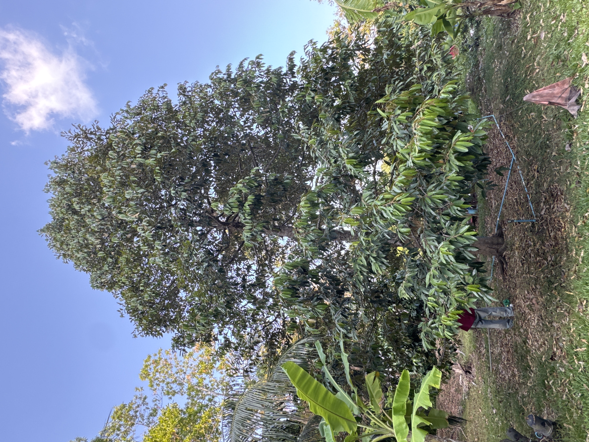

ต้นไม้ที่มีความโดดเด่นในพื้นที่ศึกษา ซึ่งมีบทบาทสำคัญในการดูดซับคาร์บอนและสร้างความร่มรื่นให้กับพื้นที่

ศรีตรัง (Jacaranda)
โดดเด่นด้วยดอกสีม่วงสวยงามที่บานสะพรั่งทั่วพื้นที่ เป็นสัญลักษณ์แห่งความภาคภูมิใจและภาพจำที่โดดเด่นของมหาวิทยาลัย

จามจุรี (Rain Tree)
ต้นไม้ขนาดใหญ่ที่มีเส้นผ่านศูนย์กลางลำต้นมากที่สุดในพื้นที่ศึกษา ให้ร่มเงากว้างขวางและมีบทบาทสำคัญในการดูดซับคาร์บอน

ทุเรียน (Durian)
ต้นไม้ที่มีเพียงต้นเดียวในพื้นที่มหาวิทยาลัย มีความโดดเด่นเฉพาะตัว และเป็นพืชเศรษฐกิจที่สำคัญของประเทศไทย

ประดู่ (Burmese Padauk)
ต้นไม้ประจำจังหวัดภูเก็ต มีเนื้อไม้แข็งแรงทนทาน และมีคุณค่าทางเศรษฐกิจและสิ่งแวดล้อม